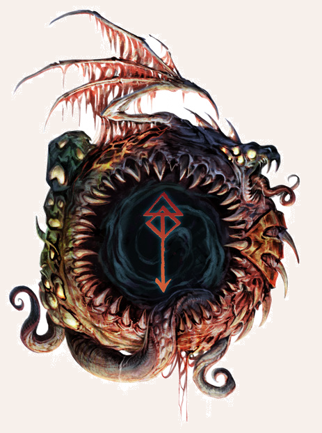

Der Arkhobal, auch bekannt als Die Schwarze Eiche, Der Schänder des Waldes oder Der Verformer des Lebens (Mz. Arkhobelim), ist ein Dämon in Gestalt eines Baumes, der Agrimoths und manchmal Asfaloths Domäne zugeschrieben wird. Der Siebengehörnte wird gerufen, um die Umgebung dämonisch zu verseuchen und Pflanzen und Tiere auf unnatürliche Weise zu verändern. Sie werden dadurch oftmals aggressiver. Das Harz des Arkhobal ist eine Art Gift, mit dem man Kulturschaffende in einen Guruk-Phaor verwandeln kann, einen schrecklichen Menschenbaum.

Arkhobal
Größe: 2,20 bis 3,00 Schritt Körpergröße, in einigen Fällen deutlich größer (siehe unten)
Gewicht: kein Gewicht
Eigenschaften:
MU 24
KL 14
IN 14
CH 14
FF 14
GE 10
KO 40
KK 30
LeP: 50*
AsP: 30*
KaP: -
INI: 11+1W6
SK: 7
ZK: 7
GS: 0
VW: 5
Äste und Würgelianen:
AT: 12
TP: 2W6
RW: lang
RS/BE: 5/0*
Aktionen: 1*
Vor- und Nachteile: keine
Sonderfertigkeiten: Klammergriff (äste und Würgelianen),
Tentakelschwung (Äste und Würgelianen),
Zu Fall bringen (Äste und Würgelianen),
Talente:
Kraftakt 13 (40/30/30),
Selbstbeherrschung 13 (24/24/40),
Sinnesschärfe 7 (14/14/14),
Verbergen 10 (24/14/10),
Einschüchtern 10 (24/14/14),
Menschenkenntnis 4 (14/14/14),
Willenskraft - (gelingt automatisch)
Anzahl: 1 oder 1W3+2 (Dämonenhorde)
Größenkategorie: groß/riesig*
Typus: Dämon (mehr als 5 Hörner, Agrimoth), nicht humanoid
Kampfverhalten: Wenn sich ein Feind nähert, versucht der Dämon mit seinen Ästen anzugreifen.
Flucht: flieht nicht
Zauber: Horriphobus 12, Pandaemonium 12 (in dämonischer Tradition)
Anrufungsschwierigkeit: -5
Beute: keine
Sonderregeln: *Wachstum: Pro 10 Jahren steigen LeP um 50 und AsP um 10 Punkte, die TP um +1 (maximal +10) und der RS um 1 (maximal +7).
Außerdem erhält er pro 25 Jahre 1 Aktion dazu (maximal 4 Aktionen).
Ab 50 Jahren gilt der Dämon als riesig.
Solange der Dämon nur groß ist, kann man seine Attacken mit allen Waffen parieren.
Ast abschlagen: Um dem Dämon einen Ast abzuschlagen, muss vor der Attacke ein Angriff auf den Ast angekündigt werden.
Nur Waffen mit einer scharfen Klinge können den Ast durchdringen.
Dazu sind 7 SP notwendig, die innerhalb von 1 KR erzielt werden müssen, da man nach kurzer Zeit die angeschlagene Stelle des Astes nicht noch einmal treffen kann.
Dämonenharz: Bei jedem LeP-Verlust des Dämons durch scharfe Waffen (Schwerter, Äxte) verspritzt er dämonisches Harz.
Alle Ziele in Angriffsdistanz müssen erfolgreich ausweichen oder eine Schilde-PA durchführen, sonst erleiden sie 1 Stufe Paralyse.
Man kann durch das Harz nicht mehr als 2 Stufen Paralyse erleiden.
Außerdem muss bei Berührung mit dem Harz 1W20 gewürfelt werden.
Bei 1-6 ist das Harz in den Körper eingedrungen und der Held muss sich gegen die Guruk-Phaor-Krankheit wehren.
Regeneration: Arkhobal ist besonders empfindlich gegenüber geweihten/gesegneten Objekten/Waffen des Ingerimm.
Empfindlichkeit gegenüber gesegneten/geweihten Objekten/Waffen: Der Dämon regeneriert pro KR 1W6 LeP.
Dämonen-Regeln: Für Arkhobelim gelten die allgemeinen Dämonen-Regeln.
Zusätzliche Dienste: Verseuchung: Der Dämon pervertiert Boden, Pflanzen und Tierwelt in einer Umgebung von 30 Schritt Radius.
| LeP-Verlust | Schmerz | |
|---|---|---|
| 38 LeP (¾) | immun gegen Schmerz | |
| 25 LeP (½) | immun gegen Schmerz | |
| 13 LeP (¼) | immun gegen Schmerz | |
| 5 LeP und weniger | immun gegen Schmerz |
| Sphärenkunde | (Sphärenwesen) | |
|---|---|---|
| QS1 | Der Dämon ist ein mächtiger, wachsender Dämonenbaum. | |
| QS2 | Der Arkhobal ist ein siebengehörnter Diener Agrimoths oder Asfaloths. | |
| QS3 | Das Harz ist giftig und verwandelt Menschen in abscheuliche Baumwesen. |